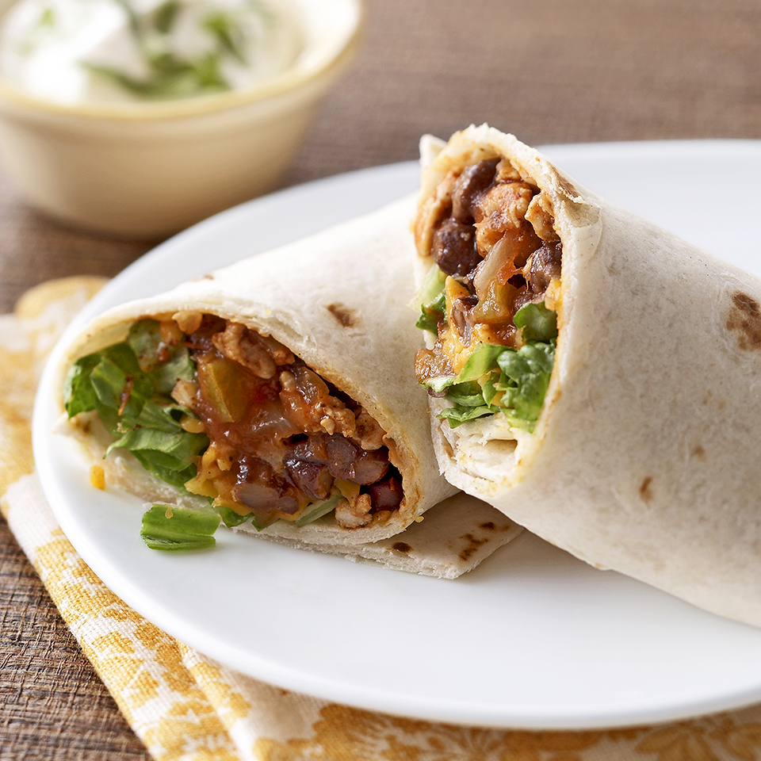

Burritos

Description:
Turkey mince burritos, high protein, high flavour an all-round crowd pleaser.
Ingredients:
- Turkey Mince (500 grams)
- Black Beans (250 grams)
- 2 Brown Onions
- Spinach
- Salsa (spicy)
- Greek Yoghurt
- Wholemeal Wraps
- Habanero Tabasco (for the zing & pop)
- Red Capsicum
- Fajita Mix Seasoning: Old El Paso Fajita Spice Mix
Steps:
- Heat the frying pan and drizzle some oil, once simmering, throw your onions on
- Once onion is lightly charred, chuck the turkey mince in
- Sprinkle the fajita seasoning evenly across the mince, and put a chunk of salsa in the centre for good measure
- Once the turkey mince gets a bit of colour, put those black beans in there
- Once the mince is cooked, turn the heat down and begin prepping the wraps
- Start the wrap with a healthy dollop of Greek Yoghurt, then lay the spinach down as a bed for the mince
- Chuck the mince in the centre of the wrap, drizzle some habanero tabasco and place the red capsicum around the corners
- Now eat it
Fin.